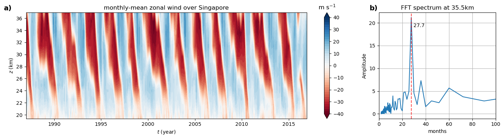

Theories
This page introduces the Quasi-Biennial Oscillation (QBO) and its numerical modeling. The Quasi-Biennial Oscillation is the dominant climate variability in the tropical lower stratosphere characterized by descending eastward and westward jets that alternate with a period of about 28 months.

The first successful theory for the QBO was proposed by Lindzen and Holton in 1968. They attributed the downward propagation of the QBO to the absorption of gravity waves at critical levels. To explain this theory, we should provisionally set aside the QBO and introduce the EP flux (Eliassen and Palm, 1960).
Considering the motion in z-x plane with a background mean flow \( U \), the energy flux due to the wave satisfies the following equation:
\[ \overline{p'w'} = -\rho_0 (U-c) \overline{u'w'} \], where \( c \) is the phase speed of the wave in x direction. Additionally, they also derived an important relation: if \( U \neq c \), then
\[ \rho_0\overline{u'w'} \ \text{is} \ \text{independent} \ \text{of} \ z. \]This assertion states that the momentum of the wave will be deposited in the mean flow only at a critical level where \( U = c\). When it comes to the QBO, the mean flow \( U \) varies with height. At a certain height \(z_0\), the amount of momentum absorbed in the altitude range \(dz\) will be \(f(U_0)|dU|\), where \(f(c)dc\) is the momentum flux due to waves of all wavenumbers \(k\) having phase speeds between \(c\) and \(c+dc\). Therefore, the Lindzen-Holton model is
\[ \rho_0 (\frac{\partial U}{\partial t} + W \frac{\partial U}{\partial z}) = -f(U)\frac{\partial U}{\partial z} + \text{other} \ \text{terms}. \]Since the observed phase speeds of equatorial waves are concentrated within the range of \(\pm 20m/s\), the simplest choice for \(f(U)\) is
\[ f(U) = \text{constant}, \ -c_r < U < c_r; \] \[ f(U) = 0, \ c_r < |U|. \]It is obvious that the parameterization of wave drag \( f(U) \partial U/\partial z\) is in the vertical advective form, which might be important when studying the formation of the buffer zone.
One defect of the Lindzen-Holton's model is that the downward propagation of the QBO phase requires a semi-annual oscillation at the higher level. In 1977, Alan Plumb proposed a model which can generates the accurate QBO phase only based on the gravity wave forcing from the tropopause and does not need any prescribed oscillation. Futhermore, unlike L-H model whose wave spectra are wide , Plumb's can model the QBO with two waves propagating in the opposite direction.
The most significant difference between L-H model and Plumb's model is the parameterization of wave drag. As Plumb added a thermal dissipation rate \(\mu\) to the perturbation primitive equation, there is an integral inside the drag, which indicates the non-local dynamics of Plumb's model,
\[ \frac{\partial \bar{u}}{\partial t} + w\frac{\partial \bar{u}}{\partial z} - \kappa\frac{\partial^2\bar{u}}{\partial z^2} = G(\bar{u},z), \]where \( \bar{u} \) is the zonal-mean zonal wind, \( w \) is the prescribed upwelling velocity, and \( \kappa \) is the vertical eddy viscosity. The wave-induced forcing is given by
\[ G(\bar{u},z) = -\frac{\rho_L}{\rho_0(z)} \sum_{n=1}^{2} \frac{\partial F_n}{\partial z}, \]where \( \rho_L \) is the background density at the lower boundary and \( \rho_0(z) \) is the background density at height \( z \). The momentum flux of each gravity wave is parameterized as
\[ F_n(z) = F_n(z_L) \exp\left[ -\int_{z_L}^{z} \frac{N\mu} {k_n[\bar{u}(z')-c_n]^2} \,dz' \right]. \]Here, \( N \) is the buoyancy frequency, \( \mu \) is the wave damping rate, \( k_n \) and \( c_n \) are the horizontal wavenumber and phase speed of the \( n \)-th wave, respectively. The two waves propagate in opposite directions.
Numerical Simulations
Simulation results will be added here.
Python Code
The associated Python code will be available on GitHub.